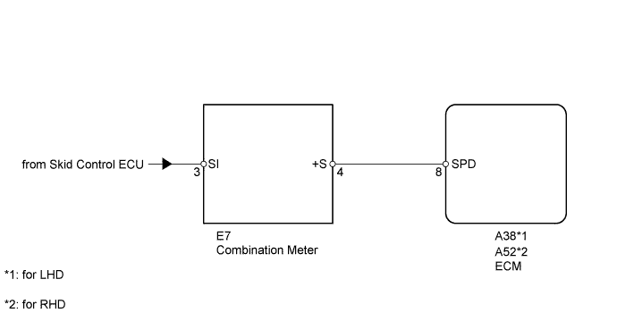
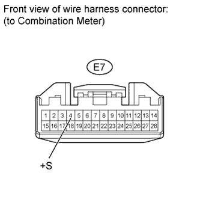
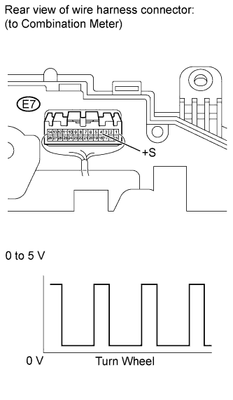
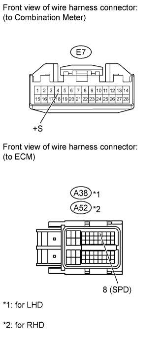

DTC P0500 Vehicle Speed Sensor "A" |

| DTC Code | DTC Detection Condition | Trouble Area |
| P0500 | While the vehicle is being driven, no vehicle speed sensor signal is transmitted to the ECM (2 trip detection logic). |
|

| 1.CHECK OPERATION OF SPEEDOMETER |
Drive the vehicle and check whether the operation of the speedometer in the combination meter is normal.
|
| ||||
| OK | |
| 2.READ VALUE USING INTELLIGENT TESTER (VEHICLE SPD) |
Connect the intelligent tester to the DLC3.
Turn the engine switch on (IG).
Turn the intelligent tester on.
Enter the following menus: Powertrain / ECT / Data List.
Drive the vehicle.
According to the display on the tester, read the Data List.
| Tester Display | Measurement Item/Range | Normal Condition | Diagnostic Note |
| Vehicle Speed | Vehicle speed/ Min.: 0 km/h (0 mph) Max.: 255 km/h (158 mph) | Actual vehicle speed | The speed is indicated on the speedometer. |
|
| ||||
| OK | ||
| ||
| 3.CHECK COMBINATION METER ASSEMBLY (+S VOLTAGE) |
 |
Disconnect the E7 combination meter connector.
Measure the voltage according to the value(s) in the table below.
| Tester Connection | Switch Condition | Specified Condition |
| E7-4 (+S) - Body ground | Engine switch on (IG) | 4.5 to 5.5 V |
|
| ||||
| OK | |
| 4.CHECK COMBINATION METER ASSEMBLY (SPD SIGNAL WAVEFORM) |
 |
Move the shift lever to N.
Jack up the vehicle.
Measure the voltage according to the value(s) in the table below.
| Tester Connection | Condition | Specified Condition |
| E7-4 (+S) - Body ground |
| Voltage generated intermittently |
| Result | Proceed to |
| OK | A |
| NG (w/ Multi-information Display) | B |
| NG (w/o Multi-information Display) | C |
|
| ||||
|
| ||||
| A | |
| 5.CHECK HARNESS AND CONNECTOR (COMBINATION METER - ECM) |
 |
Disconnect the E7 combination meter connector.
Disconnect the A38 ECM connector (for LHD).
Disconnect the A52 ECM connector (for RHD).
Measure the resistance according to the value(s) in the table below.
| Tester Connection | Condition | Specified Condition |
| E7-4 (+S) - A38-8 (SPD) | Always | Below 1 Ω |
| E7-4 (+S) or A38-8 (SPD) - Body ground | Always | 10 kΩ or higher |
| Tester Connection | Condition | Specified Condition |
| E7-4 (+S) - A52-8 (SPD) | Always | Below 1 Ω |
| E7-4 (+S) or A52-8 (SPD) - Body ground | Always | 10 kΩ or higher |
|
| ||||
| OK | ||
| ||